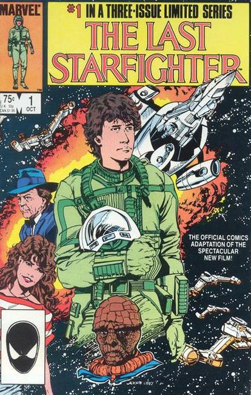

The Last Starfighter is a 1984 American space opera film directed by Nick Castle. The film tells the story of Alex Rogan (Lance Guest), an average teenager recruited by an alien defense force to fight in an interstellar war. It also features Robert Preston, Dan O'Herlihy, Catherine Mary Stewart, Norman Snow, and Kay E. Kuter.
The Last Starfighter, along with Disney's Tron, has the distinction of being one of cinema's earliest films to use extensive computer-generated imagery (CGI) to depict its many starships, environments and battle scenes. It is one of the first films to use CGI to represent "real-life" objects instead of digital graphics.
Alex Rogan is a teenager lives in a trailer park with his mother and younger brother, Louis. He also works as the trailer park's handyman, but desires to leave for new opportunities. Alex often plays Starfighter, an arcade game in which the player defends "the Frontier" from Xur and the Ko-Dan Armada in a space battle. He becomes the game's highest-scoring player, and is approached by the game's inventor, Centauri, who invites him to take a ride. Alex does so, discovering the car is a spacecraft. Centauri is an alien who takes him to the planet Rylos. An android duplicate named Beta takes Alex's place during his absence.
Alex learns that the characters and ships in the Starfighter arcade game represent a conflict between the Rylan Star League and the Ko-Dan Empire; the latter is led by Xur, a traitor to whom the Ko-Dan Emperor has promised control of Rylos. The game was designed as a test to find those "with the gift"; Alex is expected to be the gunner for a Starfighter spacecraft called the Gunstar. He also learns that the Frontier is an array of satellites creating a forcefield protecting Rylos and its surrounding planets from invasion. Xur has given the Ko-Dan the means to breach the forcefield.
A holographic projection of Xur reveals he has discovered an infiltrator in his ranks. The spy's execution is broadcast. Xur proclaims that once Rylos' moon is in eclipse the Ko-Dan Armada will begin their invasion. Scared by everything he has seen, Alex asks to be taken home. On Earth, Centauri gives Alex a communications device to contact him should Alex change his mind. A saboteur eliminates the Starfighter base's defenses, causing heavy damage and killing the Starfighters save for a reptilian navigator named Grig whom Alex befriended. The Gunstars are destroyed except for an advanced prototype that Grig was servicing in a different hangar.
Alex discovers Beta and contacts Centauri to retrieve him. As Centauri arrives, Alex and Beta are attacked by an alien assassin, a Zando-Zan, in Xur's service. Centauri shoots off its right arm. Centauri and Beta explain to Alex that the only way to protect his family (and Earth) is to embrace his ability as a Starfighter. Centauri also explains that there will be more Zando-Zan dispatched. Before Alex can reply, the assassin, mentally controlling its severed arm, attempts to shoot Alex, but Centauri jumps in the way and returns fire, incinerating the alien. Alex and Centauri fly back to the Starfighter base. Alex finds Grig, but Centauri apparently dies from his injuries. Alex and Grig prepare the Gunstar to battle the Ko-Dan Armada.
As Grig trains Alex, Beta has difficulties maintaining his impersonation of Alex, particularly with Maggie, Alex's girlfriend. Beta discovers that a small group of Zando-Zan have set up a communication center from their spaceship outside the trailer park and are relaying information back to Xur. Beta is forced to reveal everything to Maggie, who does not believe him. The Zando-Zan discover the pair and Beta is shot, exposing damaged circuitry, causing Maggie to realize the truth. The pair steal a friend's pickup truck and charge it at the Zando-Zan ship. After telling Maggie to jump, Beta crashes the truck into the ship, destroying it and sacrificing himself.
Alex and Grig attack the Ko-Dan mothership, crippling its communications. Once Alex's weapons are depleted, he desperately activates a secret weapon on the Gunstar, the "Death Blossom", that destroys the remaining Ko-Dan fighters. Lord Kril blames Xur for failing to ensure victory and for his arrogance. After relieving Xur of command, Kril orders him executed, but Xur escapes the ship just before Alex cripples its guidance controls, causing it to fall into the gravitational pull of Rylos' moon and be destroyed.
Alex is proclaimed the savior of Rylos and hailed by its people. Alex learns that the Star League is still vulnerable: The Frontier has collapsed and Xur escaped. Alex is invited to help rebuild the League. An unknown alien approaches, revealing himself as Centauri, who explains he was in a healing stasis. Alex agrees to stay. He returns to Earth, landing his Gunstar in the trailer park. Grig tells Alex's mother and the people of the trailer park of Alex's heroism. Alex asks Maggie to come with him, and she agrees. Louis is inspired to join Alex and begins playing the Starfighter game..

Series: 3 issue movie adaptation 1984
Publisher: Marvel
Adaptation written by Bill Mantlo
Illustrations by Jackson Guice
At a Mid-West USA trailer park Alex Rogan dreams of a life in the stars.